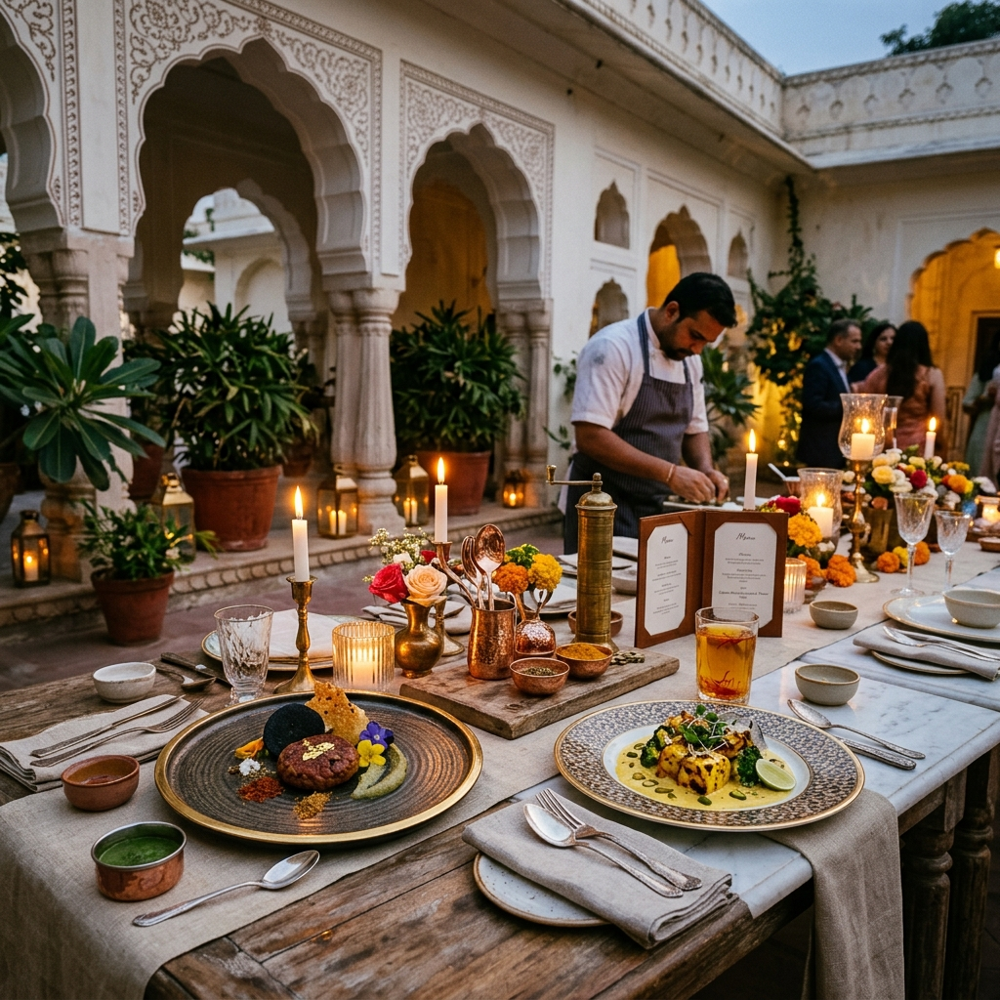
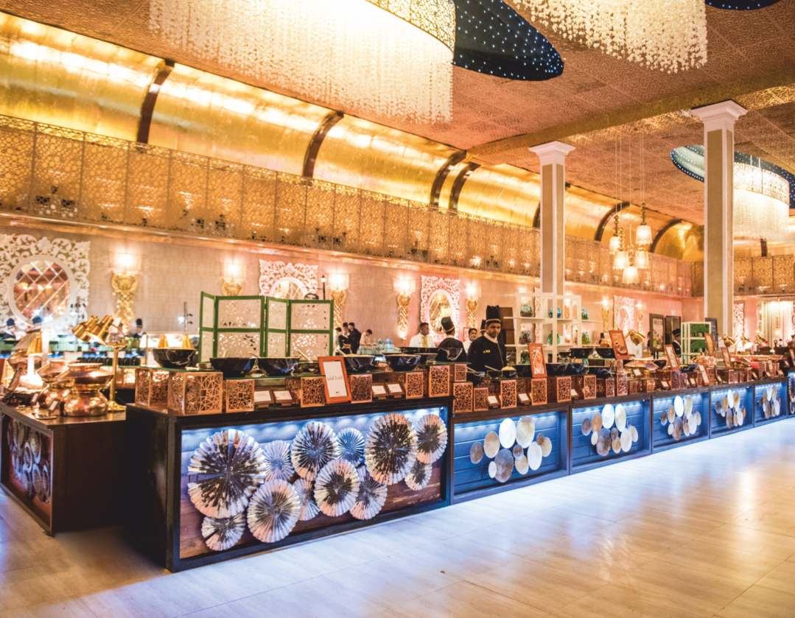
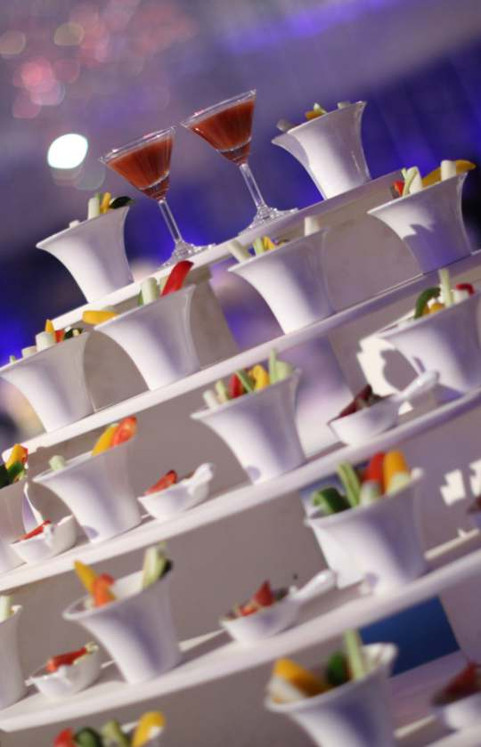
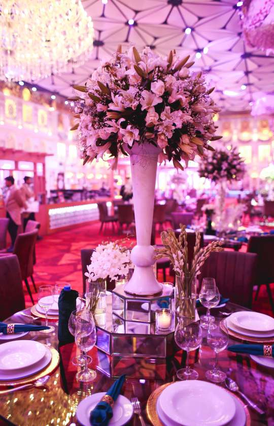

Immersive Culinary Storytelling
The World's Street Food, Curated For Extraordinary Celebrations.
"The best way to deliver the immense love to our guests is by serving them with warmth & affection."
From the moment you step in till the moment you step out, we aim to make your event as memorable as the occasion is to you. Our dedicated service crew will serve your guests with the most delightful recipes to rejuvenate and enliven their spirits, marking their presence for this phenomenal culinary trip.

Classic Delhi Tales
Delhi is a food lover’s paradise, presenting a muddled mix of cultures. Experience our modern vegetable griddle creations and comforting street fries served under a cloud of herb smoke.
Flavors of Agra
Reflecting the grand spirit of the Taj Mahal. Agra's heritage is brought to life through saffron-infused yogurt cakes, dry-fruit Makhanas, and crisp tawa chillas.
Rajasthani Heritage
Influenced by royal fort lifestyles and desert ingredients. Indulge in traditional lentil baskets, fermented mustard curries, and hand-crushed papad churi.
The Holy City of Haridwar
Simple yet unique street creations. Our signature Urad Dal Gujiyas are soaked in sweet, chilled curd and garnished live with pomegranate jewels and ginger juliennes.
Smart City Indore
Indore's late-night food markets are legendary. Discover Bhutte Ki Khees, a fresh sweet-corn grated pudding, alongside double-fried yams and crunchy sago tosses.
Mumbai Chowpatty
The vibrant, bustling seaside energy of Mumbai's coast. Hand-pressed potato dumplings inside buttered buns, and rich vegetable curries cooked on giant iron tawas.
Gujarat Chronicles
A delicate balance of sweet, spicy, and sour. Panki steamed batter cooked inside fresh banana leaves, and soft, fluffy Dhoklas elevated into a refreshing chaat.
Moradabad Dal Craft
A heavy regional focus on moong lentil flavors. Our famous Moradabadi Dal is a creamy blend of yellow lentils seasoned to order with butter, cumin, and mint chutney.
Banarasi Chatkara
Tangy, spicy, and deeply comforting. Crisp chickpea-stuffed kachoris served in kulhads, hot papad cones, and milk-soaked green pea poha.
Kolkata Street Collective
The City of Joy offers unmatched flavor profiles. Experience hollow puchka shells served with sour tamarind and sweet mint water, and fresh puffed rice tossed with raw mustard oil.
Deccan Specialties
Delicacies from Deccan India. Aromatic curry leaves, stone-ground appams swirled live, and comforting coconut stew preparations.
Signature Popup Restaurants
We bring trendsetting dining formats to your celebrations, transforming venues into active gourmet hubs.
The Spice Cube
A high-concept installation focusing on the complex geometry of Indian spices, serving freshly toasted griddle wraps and regional dry curries.
The Oriental Kitchen
Featuring an interactive revolving magnet rail that moves dim sums and customized gyozas right in front of your eyes.
Classic Italiano
Pizzerias with hand-tossed thin crusts cooked in dome stone ovens, and fresh raviolis swirled inside giant Parmesan cheese wheels.
Al-Habibi
Bespoke Mediterranean and Levantine setups, serving fresh pita pockets, charred pineapples, and gourmet hummus stations.
Rottisattva
A dedicated flatbread gallery showing the wheat-work legacy, firing tandoori rotis, biscuit bhakhris, and layered paranthas live.
Authors of Celebrations
Our culinary vision is guided by decades of inherited expertise and contemporary global hospitality education.
Mr. Anil Girdhar
The visionary progenitor of our culinary concepts, Anil is a veteran in the field of catering services, armed with decades of experience and expertise. His drive towards excellence has shepherded the enterprise to widespread national and global acclaim.
Mr. Parth Girdhar
With specialized hospitality management education from England, Parth ensures the business represents both legacy and a meticulous services management approach, focusing on food presentations and fusion dishes.
21st-Century Kitchen Infrastructure
Our commercial modular kitchen complies with the highest standards of international hygiene and quality. Ergonomically designed to minimize staff movement and maximize safety, our cooking zones feature specialized cooling chambers, hot-holding galleries, and a comprehensive Food Safety Management System.
Read Infrastructure Story
Tailored For Uncompromising Audiences
From private villas to luxury wedding pavilions and high-concept product launches, we custom-design each menu, table landscape, and live station setting.

Destination Weddings
An immersive, romantic dining experience tailored for couples seeking to tell their love story through global street flavors.

Corporate & Brands
Avant-garde food styling, brand-aligned elements, and minimal setups for luxury product launches and gallery openings.
Ready to sketch your culinary canvas?
Share your date, location, and vision with our curation studio, and we will prepare a blueprint for your review.
Plan An Event